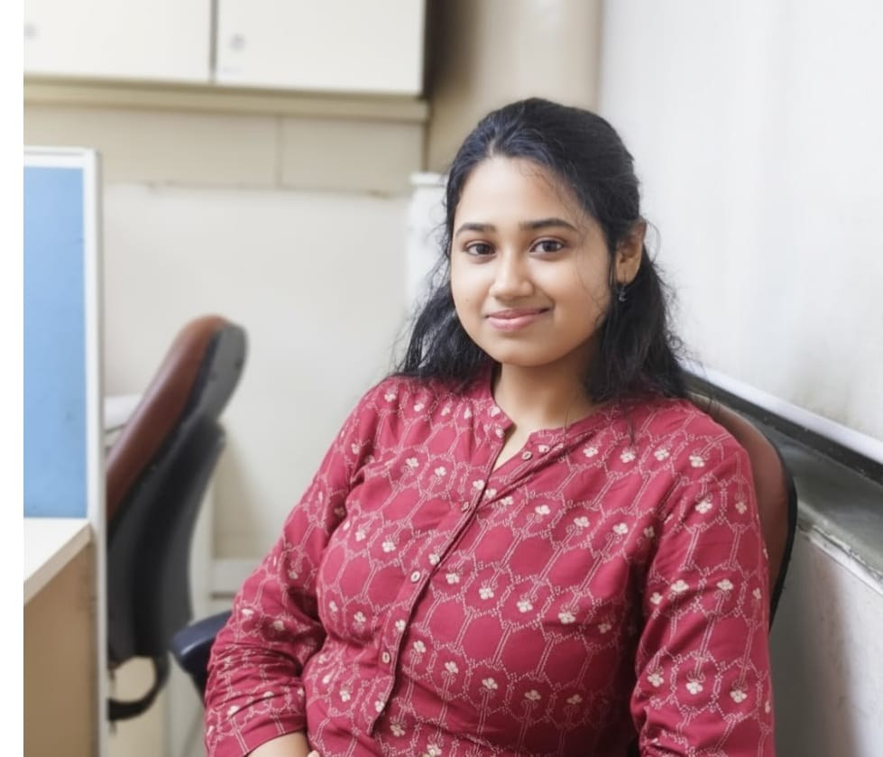
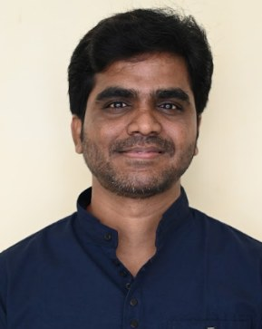
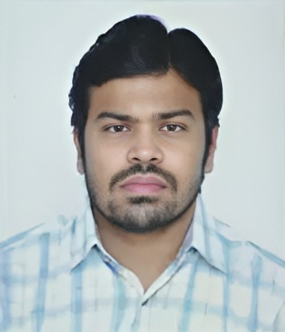

Ours is a small, hands-on lab where PhD scholars, M.Tech students, and project staff work side by side — from running ballistic trials to modelling the results the same afternoon.



We're often looking for motivated M.Tech and PhD students with an interest in textile engineering, materials science, or operations research. If you're excited about protective materials, composites, or data-driven methods for textile problems — reach out.
Apply now